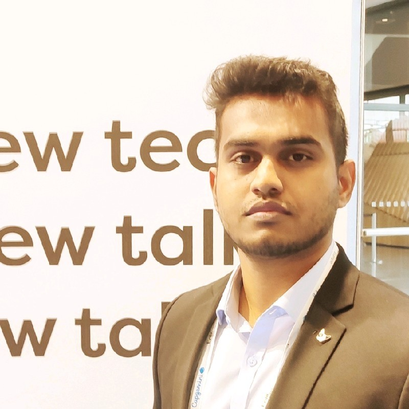

This is a dynamic introduction to who I am!
I am a committed engineer and a doctoral Candidate with big aspirations and enthusiasm. Keen on sustainable development and trying to make the world a better place.
Location: Aachen, Germany
Email: sreejith.pananchickal@eonerc.rwth-aachen.de
LinkedIn: linkedin.com/in/sreejith12333
GitHub: github.com/srsps
Operates substation equipment for safe and reliable electricity supply and leading a team of 5. In charge of overseeing INC and maintenance.
Develop an optimization model that meets the objectives of the energy management system considering energy price data and operational cost & penalties for risk of unavailability. Definition of objective function (Multiple-objective functions) with constraints. Solve the objective functions with MILP, or Non-Linear algorithms and analyze the results. Test and validate the optimization tool in HiL environment. Test the solution with different scenarios and validate the results.
Energy price forecasting with sentiment analysis - Developing a forecast model for predicting and optimizing Portuguese energy market prices.
Master of Science, Electrical Engineering and Information Technology (Oct 2021 - February 2024)
Dual Masters Candidate, Energy Technologies (Oct 2021 - August 2023)
Bachelor of Technology, Electrical and Electronics Engineering (June 2016 - August 2020)
Design of an optimal microgrid management system. Energy Flexibility Management and Optimization team. Current projects: BeFlexible, TwinEU.
Energy data analysis and visualization with Machine Learning forecast modelling. Developed a python-based dashboard to visualize energy consumption data. Various ML training models employed to compare the accuracy.
Effect of Temperature on power conversion efficiency of solar panels. Research project involving data gathering and analysis. Developed testing models to compare two temperature levels. Designed and implemented a cooling system to perform the analysis. Performed cost-benefit analysis.
Coordinated All India Events under IEEE India Council. Member in planning and organizing an all India Hackathon. Negotiated and coordinated industry sponsorship deals. Worked as head of a team consisting of 10 people from different states.
Acting as the Manager, Chairman of the board which foresees the planning and implementation of activities of CU Lisbon. Act as the main point person for EIT InnoEnergy student activities in Lisbon. Hold the responsibility of financial management and spending.
Business Decision Making & Data Analysis - Alto Advisors (September 2022)
Project Management & Negotiation - ESADE Business School (November 2022)
Innovators Journey - UnternehmerTUM (July 2023)